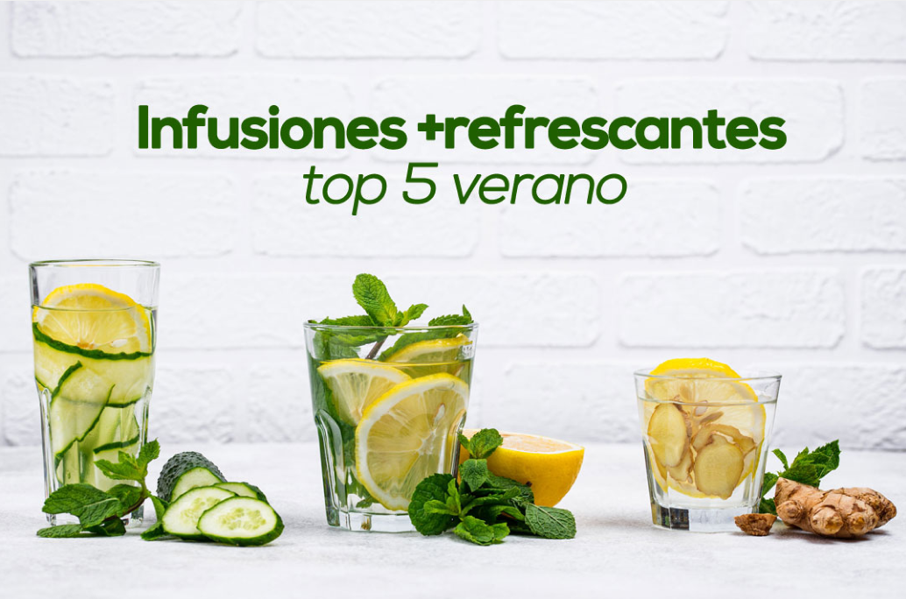

Accede a nuestras infusiones aquí
Hierbas Medicinales
En Yerbana creemos en el poder de la naturaleza para cuidar de tu bienestar. Desde tiempos ancestrales, las hierbas medicinales han sido aliadas para aliviar, fortalecer y equilibrar cuerpo y mente.
Qué ofrecemos:
- Hierbas medicinales frescas y secas.
- Infusiones artesanales.
- Mezclas exclusivas.
- Consejos y artículos.